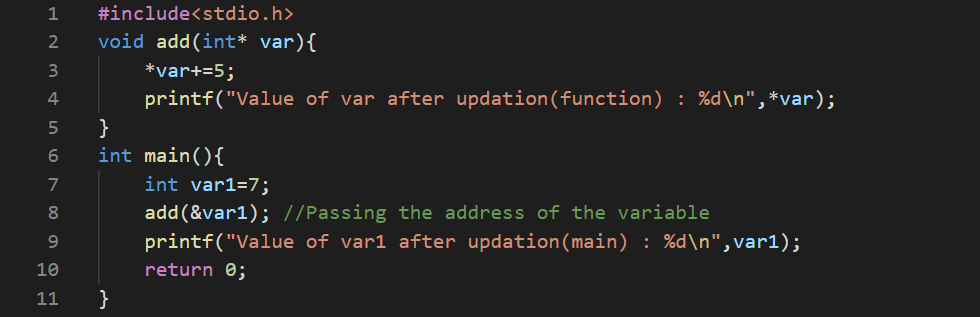
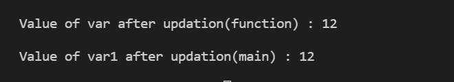
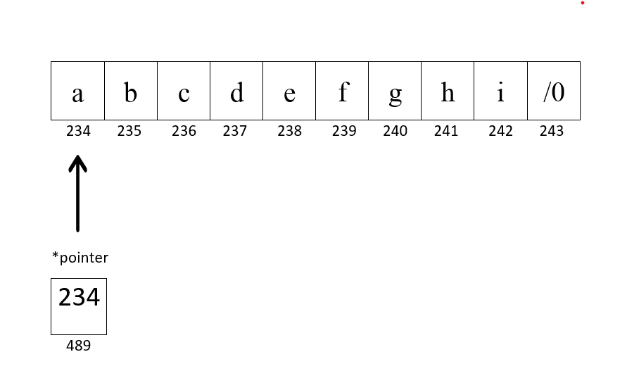
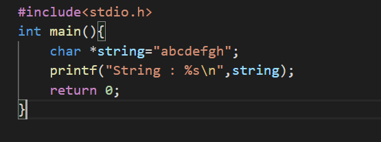
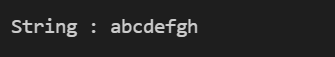

Pointers are variables in programming languages that store the memory location of another variable.
Pointers are no different than other variables.The only difference is that a variable stores value of the object and a pointer stores address of some other variable as its value.
For instance,

Let us define a variable x of type int(Integer) and set its value to 7. Each variable contains two pieces of information with it, its value, and its memory location in the system.

Output

Now,as we have seen the demonstration of declaration of variable,let us look further at the working of a pointer. Pointer is defined by placing '*' in front of a variable name. '&' character is used as reference to address of variable whose address is to be stored.

Output

But..,How's storing address gonna help me?
- Passing data to functions
- String Initialization
- Dynamic allocation of memory for arrays(malloc)
Passing data to functions
Pass By Value
When you pass data to a function using pass by value,system creates a copy of data and pass its value to the parameters(another variable with same value stored at different address) of function.So,when you try to update value of the variable,value of local variable inside function gets updated and the actual value remains unaltered.

Output

Pass by Reference
To prevent the duplication of data and this situation,one can pass the required variable using a pointer. So you are now basically passing the address of the variable whose value can be updated using the dereference operator(*) without duplication of data which further increases the execution speed of the program.

Output

String Pointers
C doesn't have a well defined datatypes for strings.Although strings can be accessed using character array or character pointer.
Character array has a disadvantage , size of the array needs to be fixed at compile-time whereas in character pointer ,pointer holds the address of first character of string as its value and elements of string can be accessed.

Output
